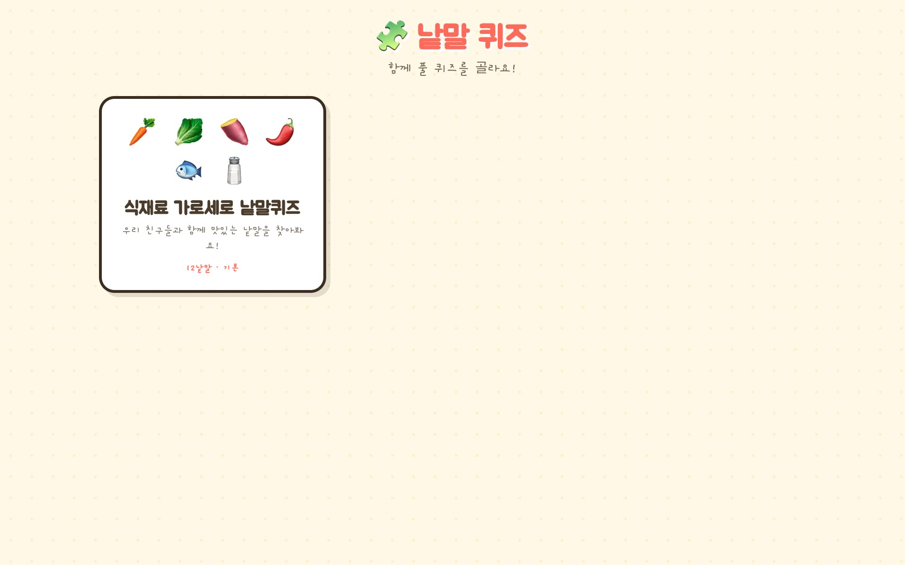
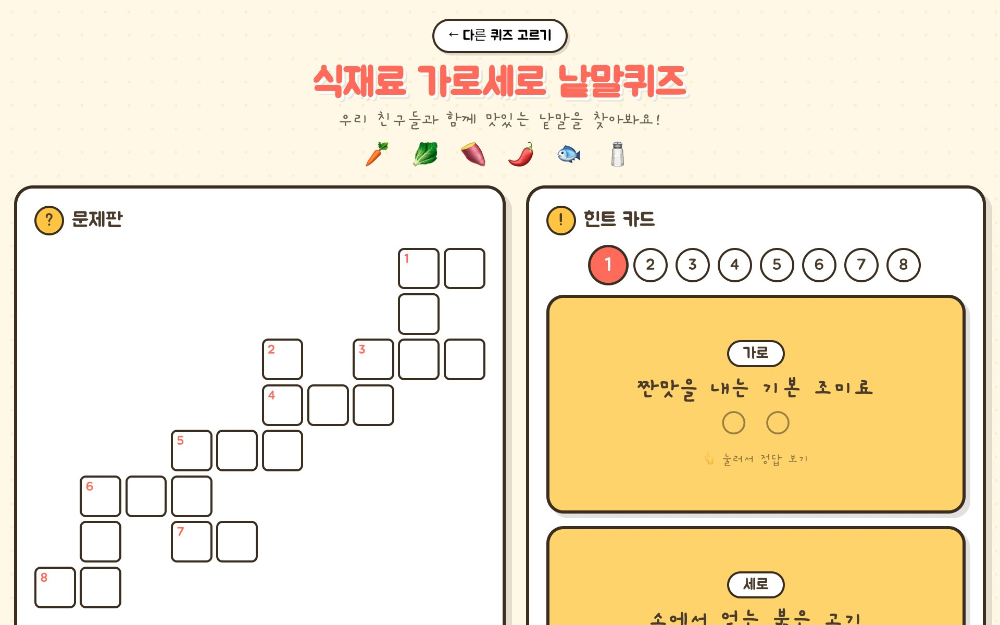

🧩 낱말 퀴즈 안내
힌트를 보고 가로세로로 글자를 채우는 낱말 퍼즐이에요.
힌트 카드를 뒤집으면 정답과 그림이 짠! 하고 나와요.
어떤 놀이인가요?
선생님과 아이들이 함께 푸는 가로세로 낱말 퀴즈예요. 오른쪽 힌트 카드를 읽고, 왼쪽 문제판의 빈칸에 글자를 하나씩 채워요. 가로와 세로 낱말이 같은 글자에서 만나 이어지는 게 핵심이에요.
기본으로 식재료 낱말퀴즈가 들어 있고, 관리자 화면에서 우리 반만의 퀴즈를 얼마든지 만들 수 있어요. 놀이 시작 화면에서 원하는 퀴즈를 골라 풀어요.
교육적 효과
누리과정과 이렇게 연결돼요.
의사소통 · 어휘
힌트의 뜻을 읽고 알맞은 낱말을 떠올려요. 새로운 단어와 그 쓰임을 놀이로 만나며 어휘가 늘어요.
글자와 소리
낱말을 한 글자씩 칸에 나눠 쓰며 음절을 인식하고, 자음·모음이 모여 글자가 되는 원리를 자연스럽게 익혀요.
사고력 · 추론
힌트 단서로 정답을 추리하고, 가로세로가 만나는 교차 글자를 이용해 다른 답까지 유추하는 문제 해결력을 길러요.
협동과 자신감
친구와 머리를 맞대 함께 채우고, 힌트 카드를 뒤집어 확인하며 "우리가 풀었다!"는 성취감을 느껴요.
이 놀이를 마치면 아이들은…
- 낱말을 음절 단위로 나누어 쓸 수 있어요
- 힌트(뜻)를 읽고 알맞은 낱말을 떠올려요
- 가로·세로가 만나는 글자를 단서로 활용해요
- 새로운 어휘의 뜻과 쓰임을 경험해요
놀이 준비
- 태블릿(또는 큰 화면) 1대를 준비해요. 다 함께 보려면 가로(landscape) 화면을 추천해요.
- 기기를 꿈 놀이터 계정으로 로그인해요 (기기마다 처음 한 번만).
- 허브에서 낱말 퀴즈의 놀이 시작 버튼을 눌러요.
- 목록에서 오늘 풀 퀴즈를 골라요. 미리 만들어 둔 우리 반 퀴즈도 여기 나와요.
💡 소그룹(2~4명)으로 둘러앉아 서로 의견을 나누며 풀면 대화와 협동이 더 살아나요.
화면별 사용법
실제 화면을 넘겨보며 따라 해보세요. 좌우로 밀거나 화살표를 눌러요.




우리 반 퀴즈 만들기
관리자 화면(놀이 관리 › 낱말 퀴즈)에서 우리 반 주제에 맞는 퀴즈를 직접 만들 수 있어요. 격자에 단어를 직접 놓는 방식이라 난이도와 주제를 자유롭게 설계할 수 있어요.
- + 새 퀴즈 만들기를 누르거나, 기본 퀴즈를 복제해서 편집해요.
- 제목·이모지·격자 크기를 정해요.
- 격자에서 단어의 시작 칸을 클릭하고, 방향(가로/세로)·정답·힌트·이모지를 입력해 단어 추가해요.
- 가로와 세로가 같은 글자에서 만나도록 놓으면 낱말이 이어져요. 겹치는 글자가 다르면 빨간 칸으로 알려줘요.
- 다 만들면 저장 — 놀이 시작 목록에 바로 나타나요.
💡 이번 주 배운 낱말, 동물·과일·직업 등 주제별로 만들면 수업과 자연스럽게 이어져요.
연령별 놀이 팁
만 4~5세
- 글자 수가 적은 낱말 위주로 만든 퀴즈로 시작해요
- 힌트 카드를 먼저 뒤집어 정답을 보고, 글자 카드에서 같은 글자를 찾아 채워요
- 선생님이 글자를 소리 내어 함께 읽어줘요
만 5~6세
- 힌트를 읽고 스스로 낱말을 떠올려 채워요
- 가로·세로가 만나는 교차 글자를 단서로 써요
- 채점하기로 확인하고 틀린 칸을 다시 고쳐요
만 6~7세
- 힌트 없이 먼저 채운 뒤 카드로 확인해요
- ⌨️ 글자 쓰기 모드로 바꿔 직접 타이핑에 도전해요
- 직접 낱말·힌트를 제안해 새 퀴즈 만들기에 참여해요
확장 활동
- 🗂️ 주제별 퀴즈 모으기 — 동물, 과일, 직업, 계절… 주제마다 퀴즈를 만들어 우리 반 퀴즈 상자를 채워요.
- ✏️ 낱말·힌트 함께 짓기 — 아이들이 낱말과 힌트를 제안하고, 선생님이 관리자에서 퀴즈로 만들어요.
- 🎭 몸으로 낱말 표현 — 정답 낱말을 몸짓·소리로 표현하고 친구가 맞혀요.
- 🖍️ 정답 그림 그리기 — 힌트 카드의 그림처럼, 낱말을 직접 그려 우리만의 그림 사전을 만들어요.
놀이 도구는 꿈 놀이터 로그인 후 이용할 수 있어요.